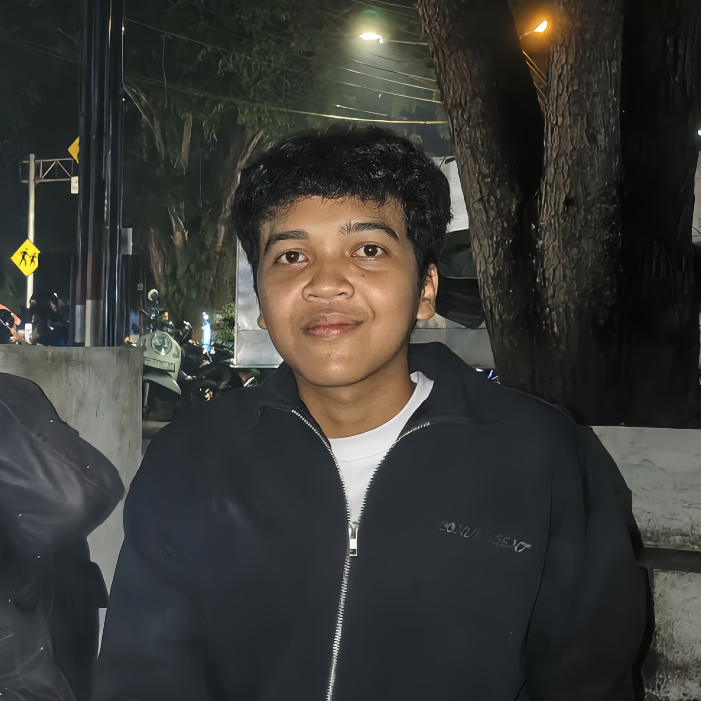
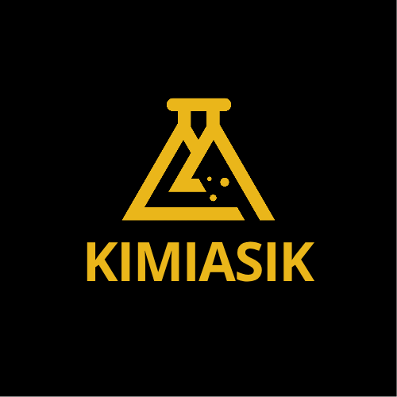
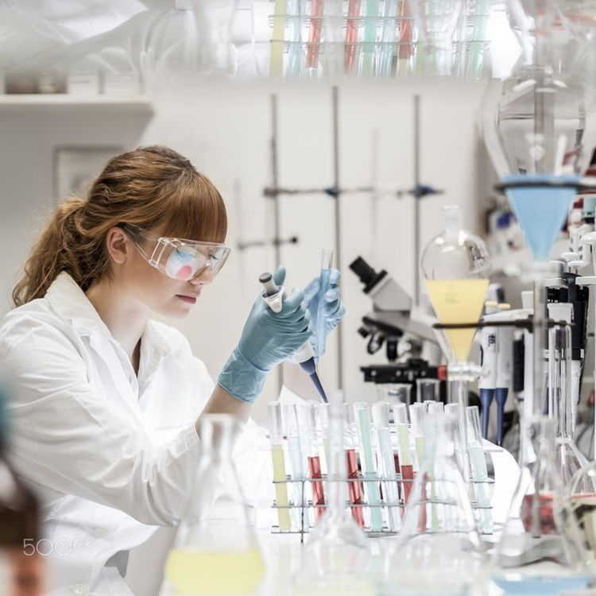
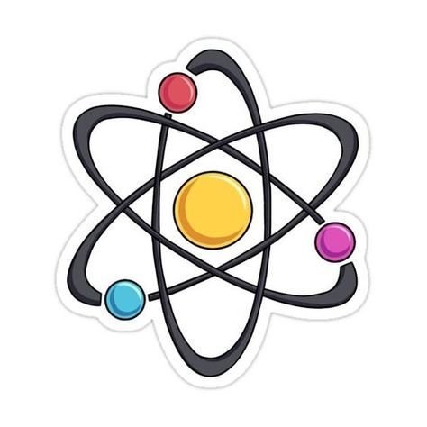
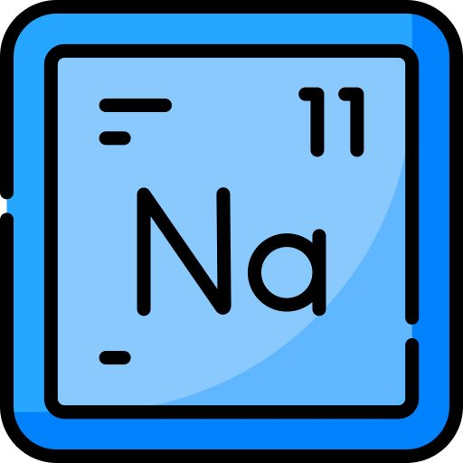
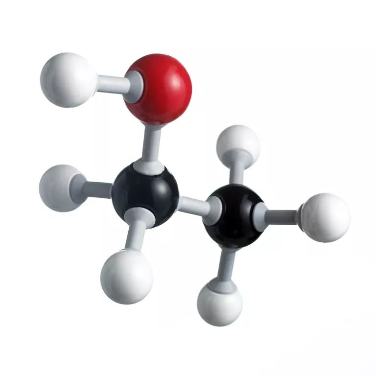
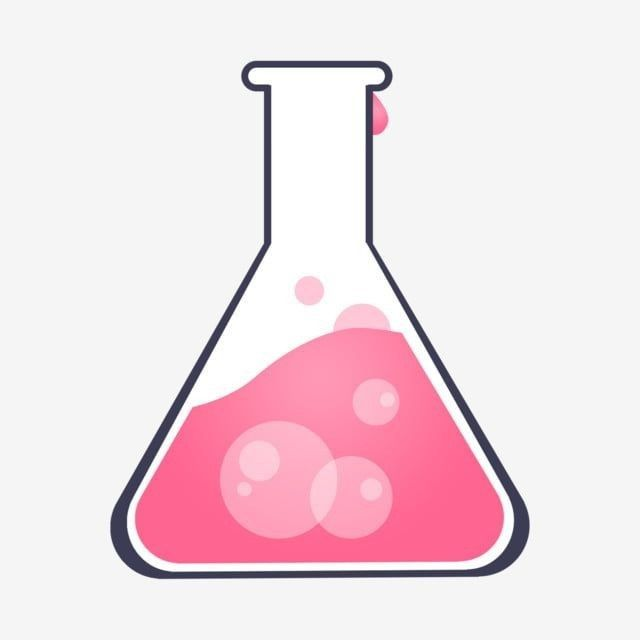
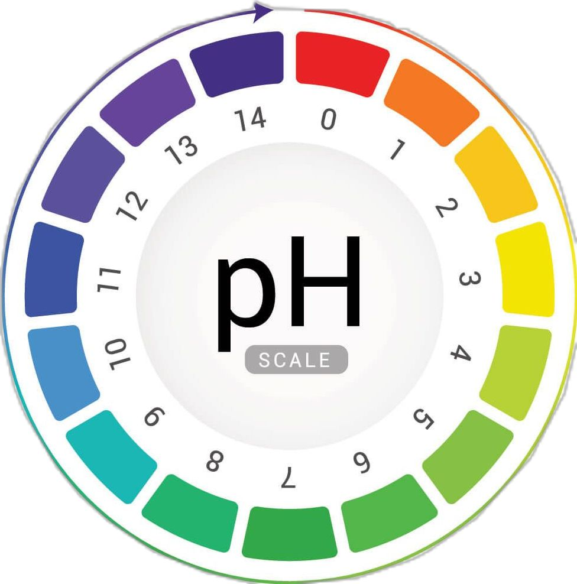

Profil Penulis



Kimia adalah ilmu yang mempelajari materi, struktur, sifat, serta perubahan yang terjadi pada suatu zat. Ilmu ini menjelaskan bagaimana zat berinteraksi dan bereaksi satu sama lain, baik dalam kehidupan sehari-hari maupun dalam proses alam dan industri, sehingga membantu manusia memahami dunia secara lebih mendalam.


Sebuah atom terdiri dari dua bagian: inti atom, yang berada di tengah atom dan mengandung proton dan neutron, serta bagian luar atom, yang menahan elektron-elektronnya dalam orbit mengelilingi inti atom.
Selengkapnya
Sistem periodik unsur ialah tabel yang menyusun unsur-unsur kimia berdasarkan kemiripan sifat dan kenaikan nomor atomnya. Tabel ini digunakan para ilmuwan untuk memahami pola dan hubungan antara berbagai unsur di alam.
Selengkapnya
Ikatan kimia adalah kekuatan yang menyatukan atom dan molekul, yang memungkinkan mereka membentuk senyawa dan bahan yang membentuk dunia di sekitar kita.
Selengkapnya
reaksi kimia adalah suatu proses di mana satu atau lebih zat diubah menjadi satu atau zat yang berbeda dan menghasilkan produk yang baru. Zat adalah unsur atau senyawa kimia.
Selengkapnya
Asam dan basa adalah larutan elektrolit yang dikenal dengan ciri khasnya, seperti asam yang memiliki rasa masam dan basa yang memiliki rasa pahit.
Selengkapnya
Reaksi Jam Yodium
Lihat
Elektrolisis Air (H2O)
Lihat
Saponifikasi Minyak Nabati
Lihat
Penyepuhan Logam
Lihat
Titrasi Asam Basa
Lihat
Uji Nyala Logam Alkali
Lihat
Dekomposisi Hidrogen Peroksida
Lihat
Ekstraksi Indikator Alami Kubis Ungu
Lihat
Kristalisasi Natrium Asetat (Hot Ice)
Lihat
Analisis Laju Korosi Logam
Lihat"Alam semesta ini adalah sebuah laboratorium raksasa, dan kita semua adalah reaktan yang sedang bereaksi satu sama lain."